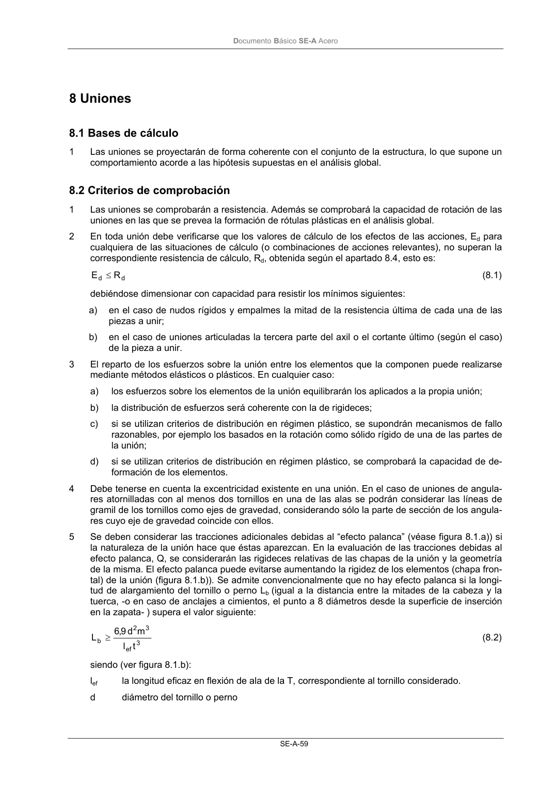

DB-SE-A · Fragmento de PDF p61 · versión 2007-10-23 · capa oficial
Formatos: JSON compacto · Markdown · PDF fuente
Ámbito del documento · texto del ámbito · documento y tablas
ID técnico a0103 · PDF pág. 61 · jerarquía no validada por persona · no es capítulo: sin_linea_de_encabezado · padre: raíz · literal original en el contenido: «8 Uniones 8.1 Bases de cálculo»
8 Uniones 8.1 Bases de cálculo 8.1 Bases de cálculo 1 Las uniones se proyectarán de forma coherente con el conjunto de la estructura, lo que supone un comportamiento acorde a las hipótesis supuestas en el análisis global.

PDF fuente redistribuible: copia fiel enlazada en esta página (SHA256 verificado).